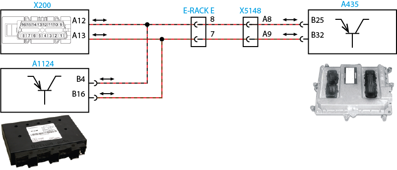

|
Constellation

Worker
Volksbus
Legenda
| |
X200 |
Conector OBD |
| |
X515-B |
Interface B |
| |
X515-D |
Interface D |
| |
E-rack E |
Conector E do E-rack |
| |
X5148 |
Conector motor/cabine |
| |
A435 |
EDC (Unidade de controle do motor) |
| |
A1124 |
PTM (Power Train Manager) |
Descrição da Falha
Comunicação entre o módulo EDC7 com a OBD sem sinal.
Indicação de Falha
Luz de alerta acende constantemente em vermelho com símbolo  e ativa o alarme sonoro curto, com o veículo andando ou parado. e ativa o alarme sonoro curto, com o veículo andando ou parado.
A LIM permanece desligada.
Estratégia de Monitoramento
O módulo EDC7 monitora a comunicação CAN com a OBD.
Efeito da Falha
Sem
comunicação via tomada OBD.
Possíveis Falhas
FMI 4: Nenhum sinal existente.
FMI 8: Falha de sinal.
FMI 9: Falha no dispositivo.
Estado Busoff do componente CAN 2.
Aviso
  Não há aviso específico para este código. Não há aviso específico para este código.
Registros de Falhas em Outros
Módulos de Comando
Não.
Considerar os esquemas
elétricos do veículo
| Verificação |
Medição |
Eliminação da
Falha |
| Conexão de CAN à tomada de OBD |
Utilize o Tester Box e consulte o manual Verificação EDC7 C32:
Medir a resistência entre o pinos A12
(OBD-CAN-H) e pino A13 (OBD-CAN-L) diretamente no conector OBD.
Valor nominal:
115 - 125 Ω |
– Verificar a
tensão de alimentação
– Verificar os cabos
quanto a rompimento, resistência anormal ou oxidação
– Verificar as
conexões quanto a mau contato ou pino torto
– Caso os valores de resistência não estejam dentro dos parâmetros, meça a resistência diretamente entre pinos B4 e B16 da PTM.
Valor nominal:
115 - 125 Ω
Se os valores estiverem dentro desta faixa substituir o módulo EDC7 para fins de teste. Se os valores estiverem fora desta faixa, substituir o módulo PTM para fins de teste.
|
Tester Box

|